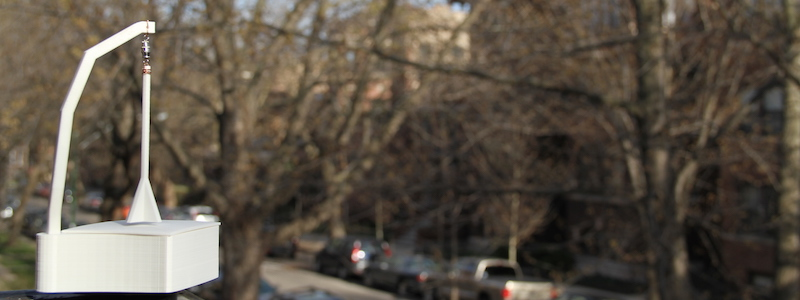
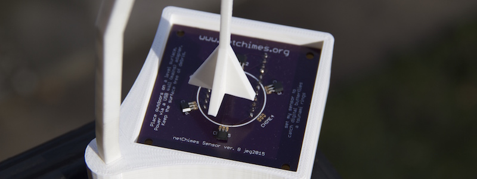

netChimes is a wind-actuated instrument comprised of a collection of 20 globally-distributed wind chime sensors. These sensors are connected via the Internet to a collection of physical chimes (a carillon of sorts) located at a public venue. When a remote sensor is triggered by the wind, a corresponding chime is struck at the installation site. As conceived, the installation sonifies and visualizes ambient wind activity, rendering those intangible things — the Internet, the global village, the wind — tangible.
The first stage of this project, to build and distribute 20 netChimes sensors around the planet, is currently underway. With the generous support of a Part-time Faculty Development Grant from Columbia College Chicago, the array will be deployed by the end of Summer 2015.
Each sensor contains a custom printed circuit board that holds a ring of six magnetic (Hall) switches. A small magnet in the base of the sail trips the switches, registering a chime strike as the sail is stirred by the wind.
The haiku printed on each circuit board reads:
set my sensor to
catch digital butterflies
a tsunami rings
The reverse of the sensor houses a microprocessor to read the magnetic switches and a Wi-Fi radio to communicate with the network. The entire unit is water/weather resistant.
Currently there is the a single Chicago-based sensor relaying real-time ambient wind activity to the netChimes server and array. The visualization/sonification below displays live netChimes data streams. As more sensors are added globally, this page will be updated.
The final component of the netChimes project is the fabrication and installation of a set of physical chimes and interactive video elements. A prelimnary sketch of the installation is provided below.
For more information related to netChimes, please contact Jason Geistweidt at www.geistweidt.com.
netChimes utilizes the particle.io board and is underwritten in part by the Center for Innovation and Teaching Excellence at Columbia College Chicago.
(c) jason e geistweidt 2015